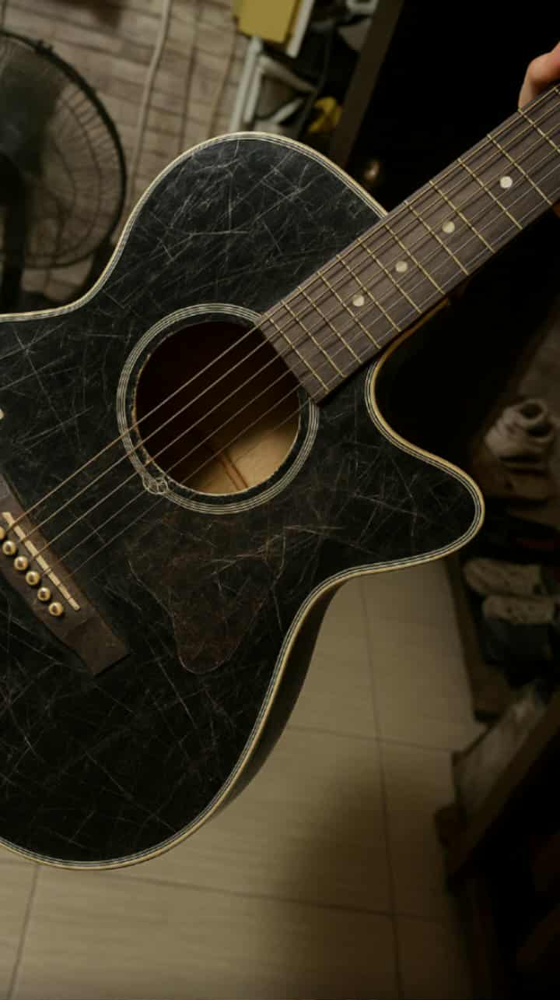

My Skills
Here are some of the skills I've developed over the years:
- Critical thinking
- Playing guitar
- Working with computers

My Goals
These are the steps I'm working towards for my future:
- Finish my BSIT degree at Lyceum of the Philippines University – Manila
- Gain hands-on experience as an IT professional
- Build and run a successful business of my own in the IT field
My goal is to become a skilled IT professional and eventually build a successful business of my own.